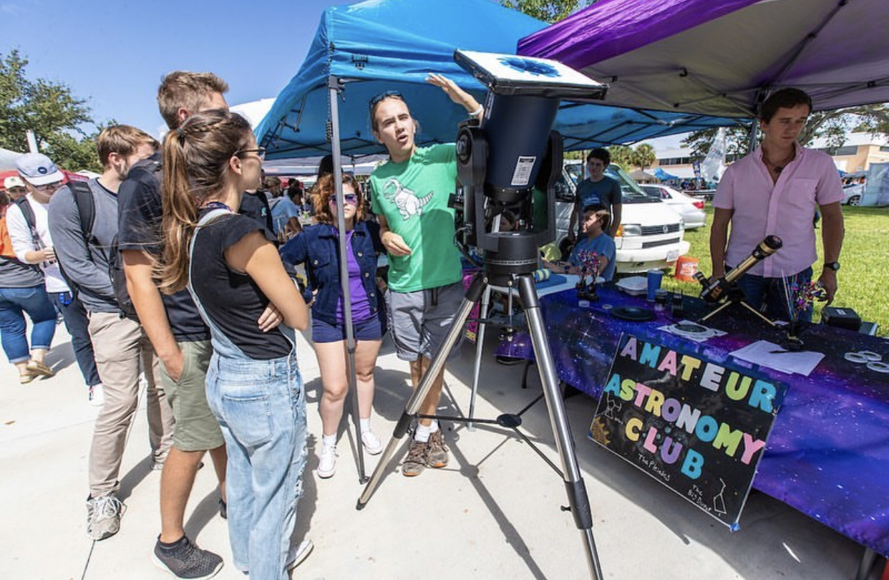

Space Camp is a series of weeklong programs for youth, centered around STEM and human spaceflight.
I worked as a Crew Trainer (camp counselor) during the summer of 2021, leading groups of teenagers
through scientific workshops and simulated space missions. I also acted as a guide to the vast on-site
museum, teaching them about exhibits from the Saturn V rocket to the capsule that carried the first
chimpanzees into space.
Space Camp was one of the most rewarding experiences of my life. Many of my trainees reminded me
of myself at their age; seeing their passion for STEM makes me confident in the future of spaceflight
and scientific achievement in general.
For the sake of privacy, I won't be sharing any pictures of the kids.
Model rocket challenge - trainees had to design/build a rocket with an egg passenger.Another favorite lab: building heat shields to protect an egg from a blowtorch.
Gearing up before a shift.Preparing for our campers' graduation.
Proud Crew Trainers - our team won Commander's Cup!
Amateur Astronomy Club
Embry-Riddle Aeronautical University
Embry-Riddle's Amateur Astronomy Club was centered around scientific outreach.
Many times a year, we visited local public schools to teach children about astronomy
and set up telescopes for public viewing. Our flagship events were astronomy open houses,
where the public could visit Embru-Riddle's astronomy department and participate in hands-on
scientific demos.
I served as the club's public relations officer during the 2019-2020 academic year.
This involved running the club's social media pages, advertising our events on campus,
and photographing our events. I also assisted with running the events in general. Many of our
open houses attracted hundreds of attendees.
ERAU's one-meter telescope.Visitors to an open house.
Public viewing of a Mercury transit - note the solar filters over the telescopes.

Attracting new members at the club fair.
A couple of posters I designed for events.
Chemistry Club
American Chemical Society
During high school, I was an officer in my school's chapter of the American Chemical Society.
We frequently visited the adjacent elementary school and worked with their science club,
facilitating simple yet informative scientific activities.
We hosted a "science night" open house once a year, where the public could come experience
cool science demos and activities.
This kickstarted my passion for STEM education and outreach. One of my favorite memories
is meeting with a lawyer from the school board to convince him it was safe to launch
model rockets at science night, good times.
Scenes from science night.
Chemistry Club officers; we all went on to great things.I still can't believe our teacher let us do this.